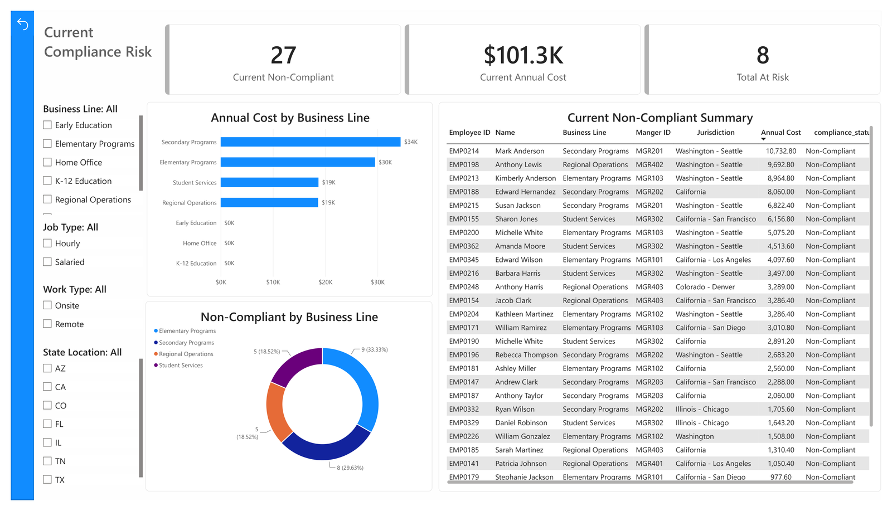
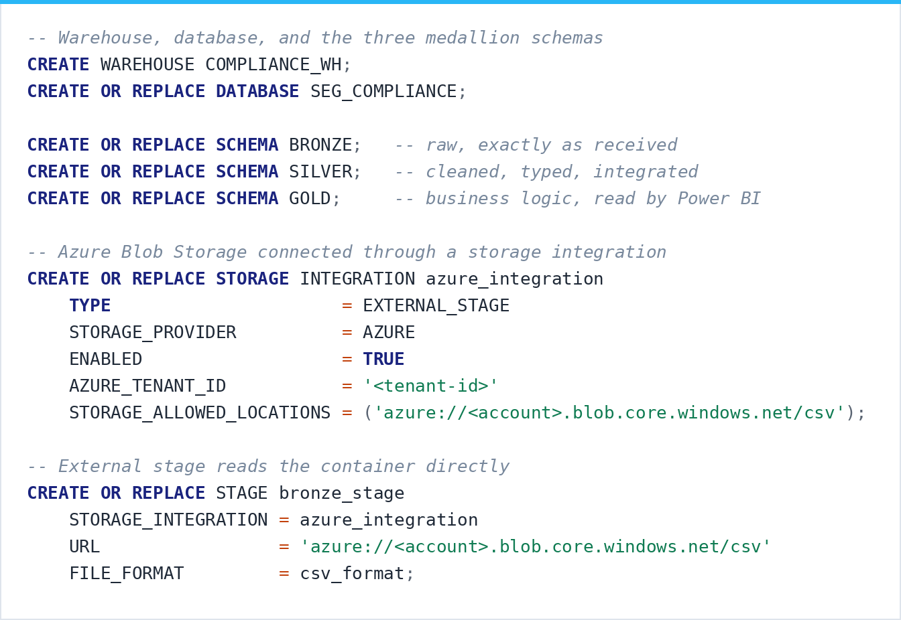
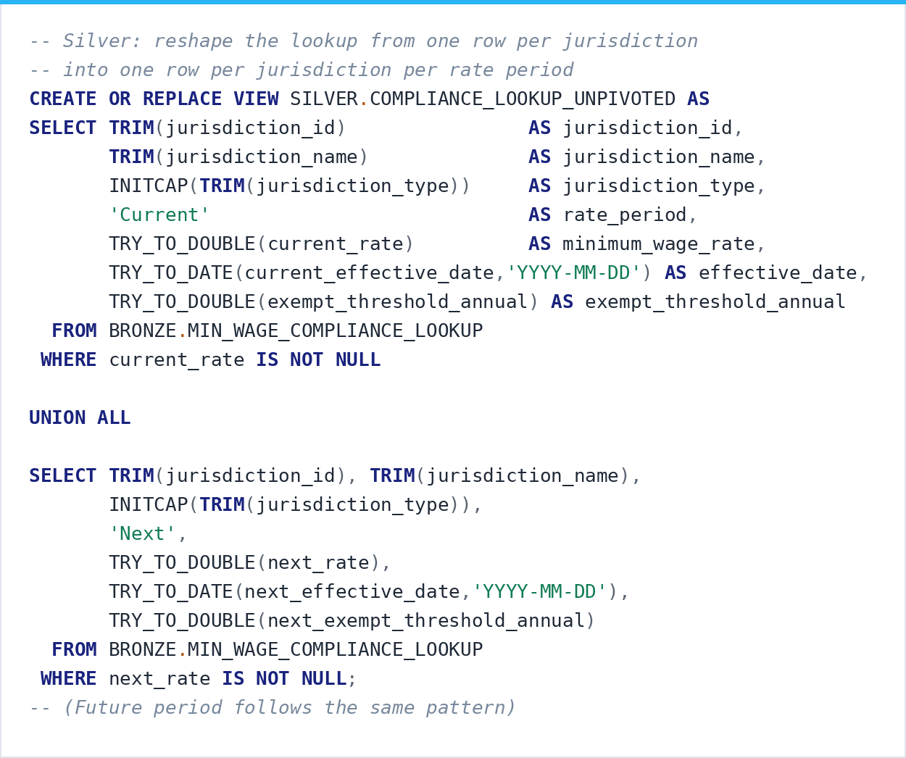
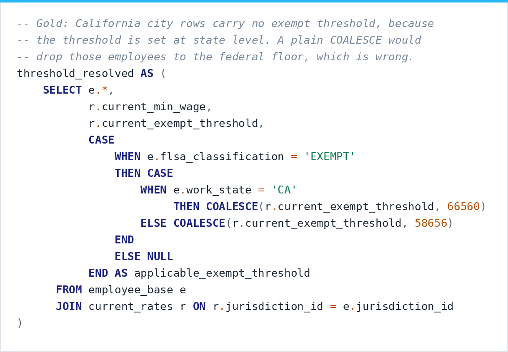
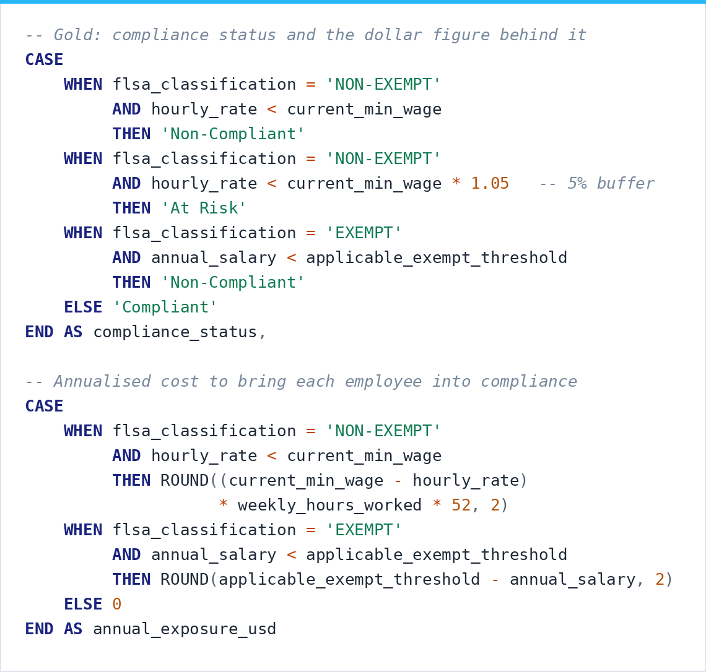
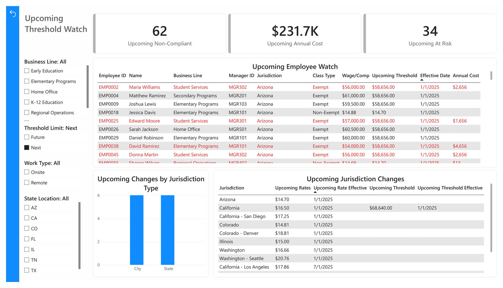

Snowflake
Medallion Pipelines Built on Azure Blob Storage and AWS S3
Snowflake is where I build pipelines that have to run on a schedule and hold up without supervision. Every project on this tab follows the same medallion pattern. Bronze holds source data exactly as it arrived, Silver does the cleaning and typing, and Gold holds the business logic that reporting reads. The value of that separation is that anyone can trace where a number came from, and a change in one layer stays in that layer.
Minimum Wage Compliance Model
Azure Blob Storage to Snowflake to Power BI · Professional Build

The benefits in establishing data pipelines for real-time updates have been a must in my experience. More often than not, that is what made proactive workforce management and continuous compliance monitoring possible in the first place.
The goal was to answer a question nobody could answer with confidence: are we compliant across every jurisdiction we employ people in. Minimum wage and FLSA exempt thresholds change at federal, state, and city level on different effective dates, and we had employees in all of them. Getting to an answer meant every active employee had to be checked against the specific rule that applied to their work location.
The purpose it served was moving HR Services from reactive to proactive. Rather than finding a violation after it happened, the model showed who was already out of compliance, who would fall out when the next rate took effect, and what each of those cost. The first pass surfaced $101K in current annual exposure across 27 employees, with a further $231K and 62 employees coming as upcoming thresholds took effect. HR Services used it to reach managers and school leaders ahead of the dates rather than after them.
Architecture: Raw CSVs land in Azure Blob Storage and flow into Bronze through an external stage, with every field typed as VARCHAR so source formatting survives intact for data quality review. Silver strips dollar signs and comma formatting through TRY_TO_DOUBLE, standardizes casing on job class and employment status, resolves remote employees to a work state through COALESCE, and unpivots the jurisdiction lookup from one row per jurisdiction into one row per jurisdiction per rate period. Gold holds two mart tables: current compliance status for every active employee, and a forward-looking table showing who becomes non-compliant when upcoming rates land. Power BI connects to Gold and nothing else.

The warehouse, database, and three schemas. Azure connects through a storage integration and an external stage reads the container directly, so ingestion needs no manual upload step. Tenant and account identifiers are redacted here.

Silver. The lookup arrives wide, one row per jurisdiction with rate periods spread across columns. This reshapes it long so every rate period becomes its own row, which is what makes the forward-looking mart possible at all.

Gold. California city jurisdictions carry no exempt threshold, because that threshold is set at state level. A plain COALESCE would drop those employees to the federal floor and understate the exposure. Resolving it once in a CTE keeps every calculation downstream clean.

Gold. Compliance status with a 5% buffer that flags At Risk while there is still time to correct it, and the annualized dollar figure to bring each employee into compliance. That last column is what turned this from a report into a conversation people acted on.

The forward-looking view. Which employees fall out of compliance at the next threshold, the date it takes effect, and what it costs. This is the page that made the model useful before a problem existed.
Manufacturing Data Pipeline
Azure Blob Storage to Snowflake Bronze / Silver / Gold
Manufacturing environments spread their data across systems that were never designed to talk to each other. Supplier records, production logs, and equipment telemetry all arrive in different shapes, and every one of them needs work before anything can be joined. I built a pipeline to pull all of it into a single queryable layer.
Architecture: Raw CSV files land in Azure Blob Storage and flow into a Bronze, Silver, and Gold medallion setup in Snowflake. Bronze keeps the source data exactly as it arrived, so there is always something to go back to. Silver is where the work happens: UNPIVOT to reshape the metrics, LATERAL FLATTEN to open up the JSON device telemetry, and surrogate keys to make the dimensional model hold together. Gold is what analysis touches, delivering a supplier scorecard and a quality trend layer.
Key Output: A Snowflake warehouse that answers the questions an operations team keeps coming back to. How each supplier is performing on delivery, where the defects are concentrated, and which vendors are contributing the most downtime in any given period.
Pipeline Ingestion
Automated loading from cloud object storage
Snowpipe · AWS S3 and Azure Blob Storage
Automated ingestion that watches cloud storage for new files and loads them into Snowflake without anyone starting the job. Built on both AWS S3 and Azure Blob Storage, using storage integrations for the secure connection and notification queues to trigger the load.